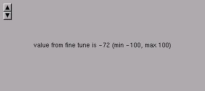

This widget create a control for fine tunning of integers between two limits.SYNTAX
int x,y,value,min,max;void finetune_create(x,y,&value,&min,&max);
Create a fine tune widget in the position x,y. The integer value can be incremented or decremented by one between the max and min limits.EXAMPLE
#include <xstep.h>This example show the fine tune widget in action.char buffer[64];
int value,min,max;
void calcf(struct xtree *w) {
sprintf(buffer,"value from fine tune is %d (min %d, max %d)",
value,min,max);
}void xmain(int n,char *p[]) {
struct xtree *win;
min=-100;
max=100;win=window_create(0,0,400,180,"finetune_create");
win->broadcast=calcf;label_create(0,0,0,0,buffer,invisible,center);
finetune_create(8,8,&value,&min,&max);
}